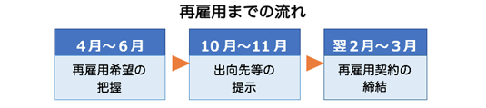

エルダー制度運用の問題解消に向けた申し入れ
「エルダー社員制度の運用に関する申し入れ」団体交渉開催
2016年11月28日、本部はエルダー社員制度の運用改善を求め、昨年に続き二度目の申し入れを提出しました。
2017年2月23日、本部は「エルダー社員制度の運用に関する申し入れ」団体交渉を行いました。交渉では退職、再雇用までのスケジュールについて、経営側は「あるべき姿」としています。下記のスケジュール通りになっていますか？

また、不安や疑問のある社員とのキャチボール（意見交換）は「丁寧に行う」ことを確認しました。不安、疑問点は積極的に質問するようにしましょう。
「申し入れ内容」と「会社書面回答」
- 1. 60歳を迎えた社員がエルダー社員制度を利用した実績を、過去5年間、年度ごとに明らかにすること。
- 【回答】定年退職後の再雇用を希望し、会社の提示する就労条件等に同意した社員については、全員を再雇用している。
- 2. エルダー社員制度を利用するまでの再雇用希望の把握、出向先の提示、再雇用契約締結までのスケジュールを明確に定めること。
- 【回答】再雇用を希望する社員の再雇用後の出向先会社については、満59歳に達する年度の春頃に面談を行い、本人の希望職種等を把握した上で、業務経験や知識、適正等を総合的に勘案して会社が選定する。その後、選定した出向先会社及び就労条件等について本人に提示している。
- 3. エルダー社員制度の希望者に対し、ＪＲグループ内外を問わず出向先の全てを提示すること。
- 【回答】エルダー社員の出向先については会社が選定し、再雇用希望者に対しては1社を提示することになる。
- 4. エルダー社員制度の希望者に対し、58歳時点で希望する出向先を複数見学させること。
- 【回答】就労条件提示の際に、出向先会社の業務内容について説明を行っているところである。
- 5. エルダー社員制度の希望者については全員を再雇用すること。
- 【回答】定年退職後の再雇用を希望し、会社の提示する就労条件等に同意した社員については、全員を再雇用している。
- 6. エルダー社員制度の希望者に対して何回でも相談に乗ること。
- 【回答】年度末時点で59歳となる社員に対し、自己申告書（5）及び書面等により希望職種等について把握しているところである。
- 7. 民営化に伴い所属支社が変更となった社員で、支社間異動の希望者については応じること。
- 【回答】広域異動者等については、希望支社管内での出向先を提示するように努めているところである。
- 8. ＪＲ社員のＪＲ本体における雇用の確保についての将来展望を明らかにすること。
- 【回答】エルダー社員については、今後ともグループ会社等へ出向することを原則とするが、高い専門技術またはノウハウを有する社員の一部については、必要に応じ、人材育成や技術継承を目的として、当社勤務としていく考えである。
- 9. 65歳を超えた社員に対する嘱託での継続雇用をやめること。
- 【回答】当社との雇用契約満了後の出向会社等における雇用契約については、各社の判断によるものである。
- 10. 各支社にエルダー社員制度に関する専門部署を設置すること。
- 【回答】各支社出向相談窓口等で必要な対応は行っている。
- 11. 各支社説明会の内容および形式について統一を図ること。
- 【回答】エルダー社員制度については、各支社における研修や説明会等を通じて、社員に説明を行っているところである。
- 12. 上記に関する回答を2017年1月31日までに書面にて行なうこと。
- 【回答】「労使間の取り扱いに関する協約（平成27年10月1日締結）」に則り取り扱う。
以 上